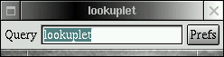

 lookuplet provides an easily accessible, unified interface for looking things up. There are many applications (desktop and web-based) in which you enter some text and they return some information based on that text. Examples include:
lookuplet aims to make all of those services readily accessible in as efficient a manner as possible.
When invoked, the lookuplet grabs the current selection and sticks it into a text field for potential editing. You then press a key combination that you have previously configured and the text is sent either as an argument to an application or URL encoded and substituted into a URL which is then opened with your preferred web browser.
This interface is based on the emacs principle of typing as few characters as possible to perform tasks that are done frequently. I find myself looking things up in various applications all of the time and the overhead of creating a new browser window, selecting a bookmark, clicking into the text entry field, entering the text and then pressing submit struck me as tremendously inefficient.
The expectation is that you'll configure your window manager to launch lookuplet at the press of some key combination so that from any application, you can simply highlight text, press the lookuplet key combination and then press the key combination of your desired service. With such a configuration, the process of looking up information becomes extremely efficient in terms of key presses and mouse clicks.
The key combinations used by lookuplet and the associated launch configuration are maintained via a simple graphical user interface.
% git clone https://github.com/samskivert/lookuplet.git
lookuplet is released under the GPL. The most recent version of the program should always be available here.
Contributions are welcome. Email mdb@samskivert.com with comments or patches.